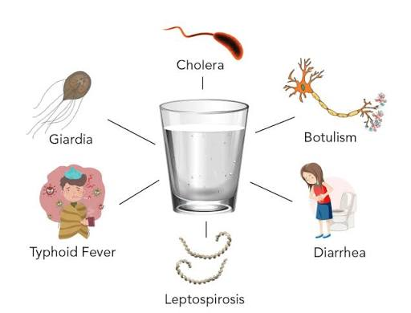

Water-borne disease checklist
Select the diseases you'd like to track or include in your survey/form. This example includes a small script to count and show the selected items.
Selected items:
Select the diseases you'd like to track or include in your survey/form. This example includes a small script to count and show the selected items.